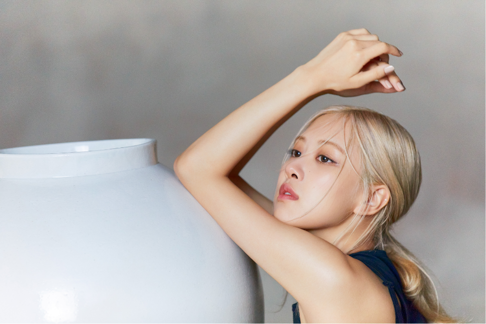
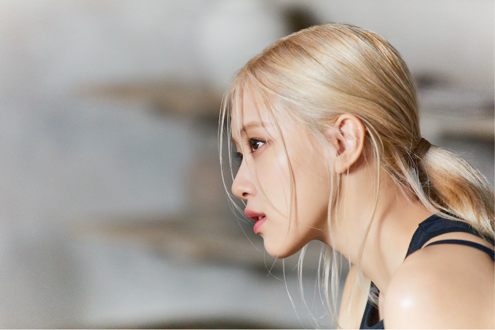

Sulwhasoos
Rose Brand Site Contents
SULWHASOO STORYTELLER
SULWHASOO REBLOOM
with ROSÉ
GLOBAL AMBASSADOR, ROSÉ
ROSÉ와 함께 할 설화수의 아름다운 여정
브랜드의 시작부터 완성까지
설화수가 걸어온 아름다움을 향한 여정들에 글로벌 앰배서더 ROSÉ가 함께합니다.
그녀의 감각으로 재현한
앰배서더 필름 <사람은 흙에서 태어나 꽃이 된다>를 통해,
설화수의 세계관 스토리를 만나보세요.
AMBASSADOR FILM
사람은 흙에서 태어나 꽃이 된다
설화수의 시작과 완성까지의 여정을 담은
<사람은 흙에서 태어나 꽃이 된다>는
흙, 눈, 꽃의 은유적인 상징물로
설화수의 정신과 이미지를 시네마틱하게 표현하였습니다.
AMBASSADOR FILM
사람은 흙에서 태어나 꽃이 된다
MOTHER EARTH
흙의 기운으로 시작되다
1932년, 아름다움을 꽃피우기 위해 시작된
설화수의 찬란한 여정은 모든 만물의 근원이 되는
흙의 정신과 맞닿아 있습니다.
- 

- 

AMBASSADOR STORY
설화수, 그리고 ROSÉ
글로벌 앰배서더 ROSÉ.
지금의 아티스트가 되기까지 그녀가 꿈을 향해
정진하던 모습은 설화수가 선도하고자 하는
여성의 진취적인 면모와 닮아 있습니다.
SNOW
고난 끝에 맞이한 환희
고난과 환희를 동시에 뜻하는 눈은
설화수가 지금의 모습으로 성장할 수 있었던 동력인, 오랜 시간 지켜온 철학과 헤리티지를 의미합니다.
흙, 눈, 꽃의 은유적인 상징물로 설화수의 정신과 이미지를 시네마틱하게 표현하였습니다.
AMBASSADOR STORY
다시 피어난 설화수, ROSÉ와 함께
철학과 헤리티지를 바탕으로 ROSÉ와 함께
정신과 움직임을 계승해 나가며
설화수는 새롭게 피어나기를 다짐합니다.

FLOWER
마침내 찬란한 꽃이 피어나다
설화수의 아름다운 여정은
마침내 눈을 뚫고 완연한 꽃으로 피어나
지금의 설화수의 모습으로 완성됩니다.
1932
설화수의 시작 - 윤독정 여사의 동백기름
1966
ABC 인삼 크림 출시 - 최초의 인삼 화장품
1997
윤조에센스 출시 - 최초의 퍼스트 에센스
2022
설화, 다시 피어나다 - SULWHASOO REBLOOM
SULWHASOO REBLOOM
창조하고 계승하는 순환의 여정
동백기름으로 시작하여 수많은 최초와 최고의
기록의 여정을 걸어온 설화수.
앰버서더 필름 <사람은 흙에서 태어나 꽃이 된다>를 통해
모두가 저마다의 꿈을 다시 한 번 상기하고,
설화수의 의미처럼 만개하기를 바랍니다.
“I've really noticed some amazing changes to my skin since I started using Sulwhasoo.
I feel like it's something I'd want to use for a long, long time."
GLOBAL AMBASSADOR, ROSÉ
AMBASSADOR INTERVIEW
ROSÉ와 설화수의 첫만남
글로벌 앰배서더 ROSÉ가
설화수와 처음 마주한 순간의 이야기를
앰배서더 인터뷰로 만나보세요.
윤조에센스 백자에디션
강인한 흙의 기운으로 혹독한 과정을 견뎌낸 백자로
다시금 탄생한 윤조에센스
한국의 미감을 대표하는 조선 백자와 만나
전통의 아름다움과 현대 감각이
조화롭게 공존하는 아트 오브제로 태어났습니다.
BRAND CAMPAIGN
FROM 1932 TO YOU
글로벌 앰배서더를 비롯하여
수많은 여성들과 함께한 설화수의 여정을
매니페스토 필름 <FROM 1932 TO YOU>로 만나보세요.
sulwhasoo Rebloom with ROSÉ
Global Ambassador, ROSÉ